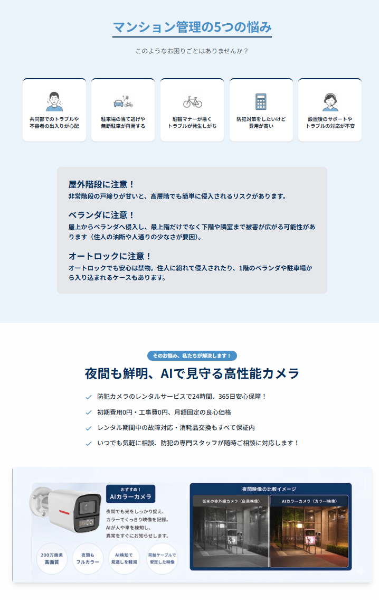
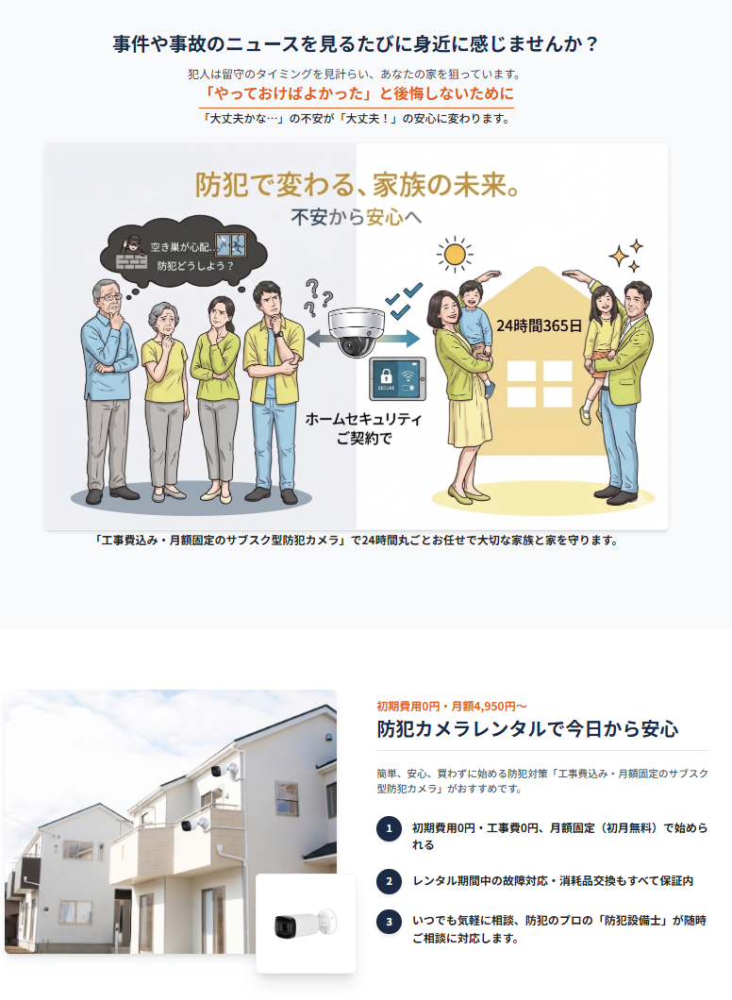

The Strategic Context
今、未来に向けた「共通認識」が必要です。
外部環境の変化が加速させる、避けて通れない「2つの道」
今後の市場環境における「二極化」の加速
現在、資材高騰や供給不足といった外部環境の変化により、市場はこれまでの形を維持できなくなっています。近い将来、私たちのビジネスフィールドは明確に「2つの領域」へと再編されていきます。
● 通販型・一般普及品領域
Low Value / High Competition
「1円でも安い方」が優先されるコスト競争の領域です。外部環境の悪化がそのまま利益の喪失に直結しやすく、常に価格比較にさらされ続ける、非常にリスクの高い市場です。
● 提案型・業務用ソリューション領域
High Value / High Trust
専門知識に基づいた「納得感」が評価される領域です。値上げが避けられない時代だからこそ、お客様は「信頼できるプロ」を求めています。適正な利益を守り、深い信頼関係を築ける唯一の道です。
Our Stance
代行するのではなく、
"武器"を授ける伴走者として。
私たちは御社のすべての業務を引き受ける「何でも屋」ではありません。なぜなら、御社が主役となり、自らの力で最高の結果を掴むことこそが、真の自立であり、長期的な成功の鍵だと信じているからです。
※現場への常時同行や、すべての事務作業の肩代わりはいたしません。その代わりに、御社が誰よりも輝き、選ばれるための「最強の武器」と「戦い方の知恵」を提供することに全力を注がせていただきます。
Evolution of Support
私たちの支援が他と「型」が違う理由
「伴走者」という哲学に基づき、IPSは支援のステージを一段引き上げています
従来の一般的な支援（モノ中心）
-
情報伝達を中心とした対応
価格改定や納期案内などの事務的な情報のやり取りがメインとなる関わり方。
-
製品スペック情報の共有
カタログ上の数値や機能紹介に留まり、エンドユーザーへの「付加価値の伝え方」に踏み込まない。
-
人手による部分的な補完
現場への同行など「労働力」の提供が主となり、御社自身の営業体制の強化に繋がりにくい。
未来志向の戦略支援（成果中心）
-
価値提案への転換をプロデュース
変化を「専門性を証明する好機」と捉え、商談の質を根本から引き上げるための戦略を共有。
-
独自AI武器「AISS」の提供
「納得感」を自動生成するデジタルツールを提供し、提案の説得力をテクノロジーで最大化。
-
自律的な組織成長のバックアップ
ウェビナーや勉強会を通じ、御社チームが「選ばれ続けるプロ」であり続けるための知恵を共有。
成長を加速させる「3つの具体的支援」
武器の提供
（AISS・戦略LP作成）
特定の課題を可視化し、成約率を劇的に高めるWeb資料を構築。御社の提案を「唯一無二の価値」へと昇華させるデジタル武装です。
知恵の共有
（ウェビナー・勉強会）
ツールの活用法から、環境変化に応じた商談術まで。動画や勉強会を通じ、市場を勝ち抜く実戦的なノウハウをリアルタイムに共有。
販路の開拓
（自律集客・広告活用）
作成した資料は広告運用の着地先としても活用可能。紹介のみに頼らない、自律した新規獲得ルートの確立をバックアップ。
本戦略の運用プロセスについて
- ・専用LPの作成は、案件の戦略性に基づき個別に協議の上で進めさせていただきます。
- ・ウェビナーや勉強会の開催日程は、弊社担当営業より随時ご案内をさせていただきます。
- ・広告運用や共有したノウハウの実践・検証は、伴走のもと御社にて主体的に行っていただきます。
「戦略LP」制作イメージ
ターゲット層の課題や商材の特性に合わせて、最適なストーリーとデザインを設計。
言葉だけでは伝わりにくい「御社ならではの価値」を視覚化し、お客様の納得感を生み出します。

CASE 1 : マンション管理ソリューション
特定課題への解決提案型
マンション管理特有の悩み（トラブルや駐輪マナー等）を具体的に提示し、夜間も鮮明なAIカメラによる解決策を論理的に訴求するデザイン。

CASE 2 : BtoC サブスクリプション
共感・安心感訴求型
ニュース等の身近な不安を起点に、イラストを用いて親しみやすさを演出。「買わずに始める」ハードルの低さを強調したデザイン。
共に、未来の勝者へ。
「私たちは、御社の代わりにはなれません。
しかし、御社が市場の変化を味方につけ、『価値提案企業』へと成長していくための、最良の武器と知恵を提供させていただきます。」
代理店様と一緒に、価値と人間力で
共に成長し続ける未来を構築していきましょう。